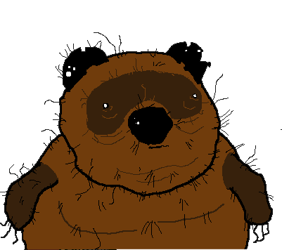

Изменения в новой версии:
- Добавлена ошибка при вводе уже существующего дела.
- Всплывающие окна сделаны своим стилем вместо стандартных браузерных.
- Стиль кнопок: появляется "рука" при наведении и эффет нажатия при клике.
- По крестику теперь можно не только зачеркивать, но и снять зачеркивание, если передумал (чтобы не обводить кружком).
- Добавлена возможность менять уже добавленное дело с помощью кнопки-карандаша.